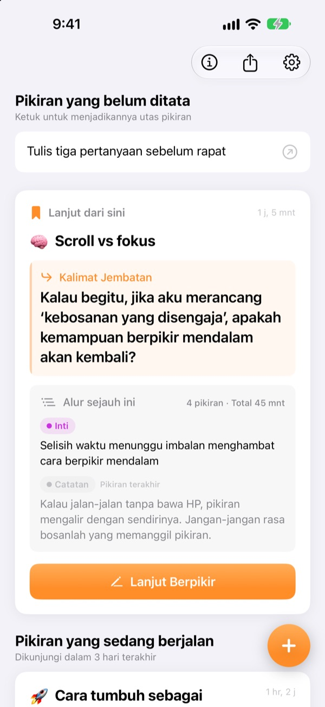
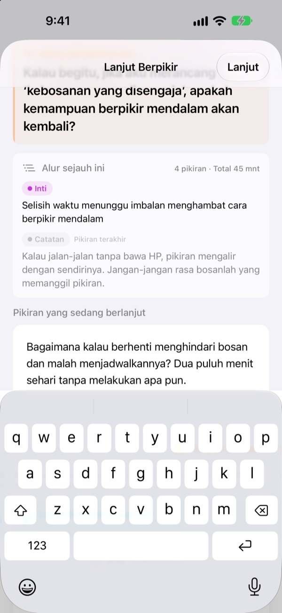
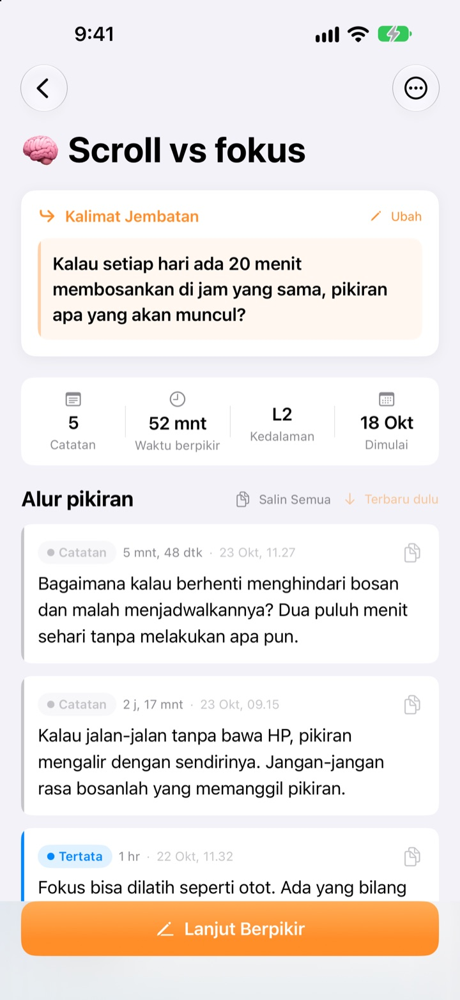
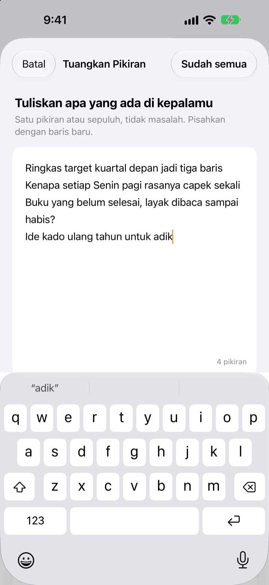

Pikiran yang tertunda kemarin,
hari ini lanjut dari titik yang sama
Saat berhenti berpikir, tinggalkan satu baris untuk dilanjutkan. Saat membuka aplikasi lagi, baris itu menunggu di paling atas.
Semua fitur gratis. Tanpa akun, semuanya tetap di perangkatmu.

Coba tinggalkan kalimat jembatan
Tulis satu pikiran, lalu tinggalkan kalimat yang akan kamu lanjutkan nanti. Urutannya sama persis dengan di aplikasi.
Tadi sampai mana, ya?
Kamu membuka catatan beberapa hari lalu dan hanya menemukan beberapa kesimpulan, bukan pertanyaan yang tadinya mau kamu pikirkan berikutnya. Akhirnya mulai lagi dari nol. ThinkFlow membuatmu meninggalkan pertanyaan berikutnya saat berhenti, jadi begitu kembali kamu langsung mulai dari situ.
Kalimat jembatan menunggu di atas
Akhiri sesi dengan satu baris: pertanyaan untuk dilanjutkan. Saat kembali, kalimat itu, inti sejauh ini, dan pikiran terakhir ada di satu kartu. Tidak perlu mengingat-ingat lagi.
Kalimat jembatan juga tampil di widget Layar Utama, dan selama berpikir, waktunya berjalan di Layar Kunci dan Dynamic Island.

Dari catatan ke inti
Naikkan setiap pikiran lewat empat tingkat: catatan, tertata, inti, dan ringkasan. Sekali lihat, kamu tahu seberapa matang pikiran itu.
Hasil pencarian atau pertanyaanmu dilampirkan sebagai referensi, terpisah dari pikiranmu sendiri.

Kosongkan kepala dulu
Tulis semua yang ada di kepala, satu baris per pikiran, lalu pilih yang ingin kamu dalami sekarang. Pikiran itu jadi utas, sisanya menunggu di layar utama sampai kamu mengetuknya.
Pikiran yang tidak disentuh lebih dari tiga hari dikumpulkan di Pikiran untuk dihidupkan lagi.

Mulai dalam tiga langkah
- 1
Tuangkan pikiran
Satu baris per pikiran, lalu pilih yang layak dikembangkan.
- 2
Lanjut berpikir
Tambahkan setiap ide baru secara terpisah supaya mudah dimatangkan nanti.
- 3
Tinggalkan kalimat, lalu tutup
Lain kali kamu mulai dari kalimat itu.
Tingkat pematangan
- Catatan
- Pikiran mentah
- Tertata
- Sekali ditata
- Inti
- Hanya intinya
- Ringkasan
- Ringkasan akhir
Ketuk label tingkat di samping pikiran untuk mengubahnya. Inti dan ringkasan tampil lebih dulu di kartu saat kamu kembali.
Kalimat jembatan menunggu di atas
Apakah kalimat jembatan wajib ditulis?
Kalau kamu sudah menambahkan sesuatu, ya: layar Lanjut Berpikir baru bisa ditutup setelah kamu meninggalkan baris berikutnya. Kalau belum menulis apa-apa, tutup saja. Kuncinya, berhenti saat masih ada yang ingin ditulis, bukan saat buntu.
Apa itu Pikiran untuk dihidupkan lagi?
Utas yang tidak kamu buka lebih dari tiga hari dikumpulkan tersendiri di layar utama, jadi pikiran yang hampir terlupa bisa lanjut dari kalimat jembatannya.
Bagaimana cara melaporkan bug atau memberi usulan?
Gunakan Kirim Masukan di pengaturan aplikasi, kirim email ke alamat di bawah, atau buka issue di github.com/M1zz/ThinkFlow/issues. Semua masukan kami sambut.
Benar semuanya gratis?
Benar. Semua fitur gratis, tanpa iklan dan tanpa akun. “Dukung Pengembang” di pengaturan sepenuhnya opsional dan tidak membuka fitur tambahan.
Ada pertanyaan atau masukan? Kirim email ke leeo@kakao.com.